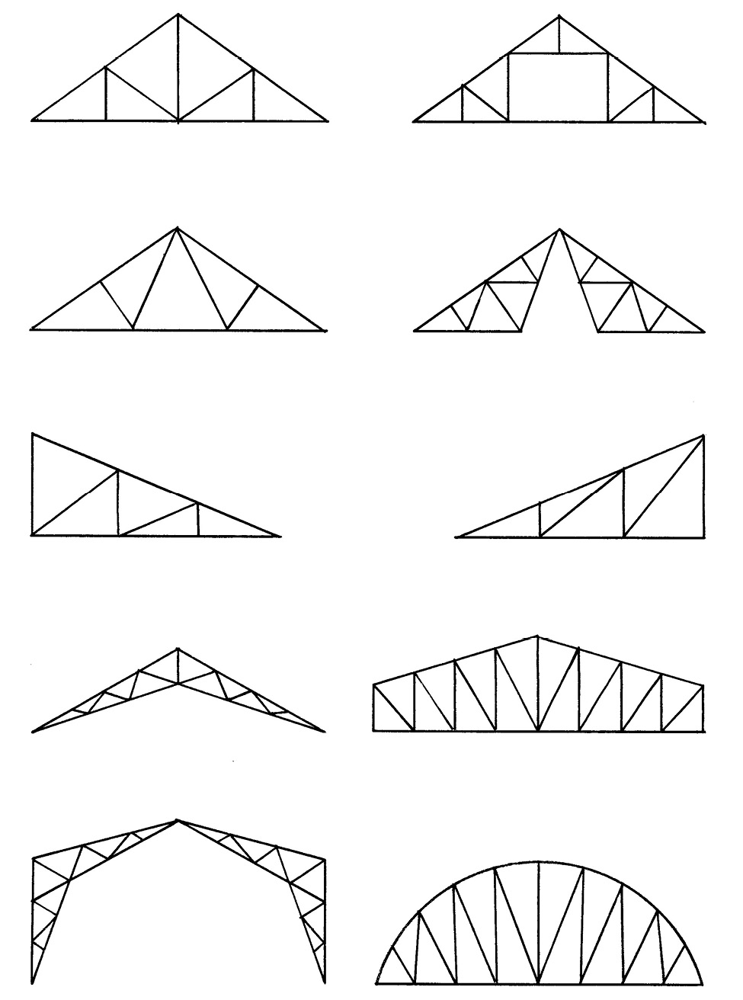
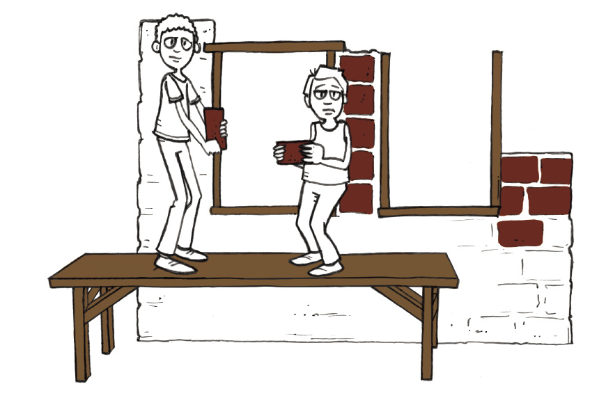
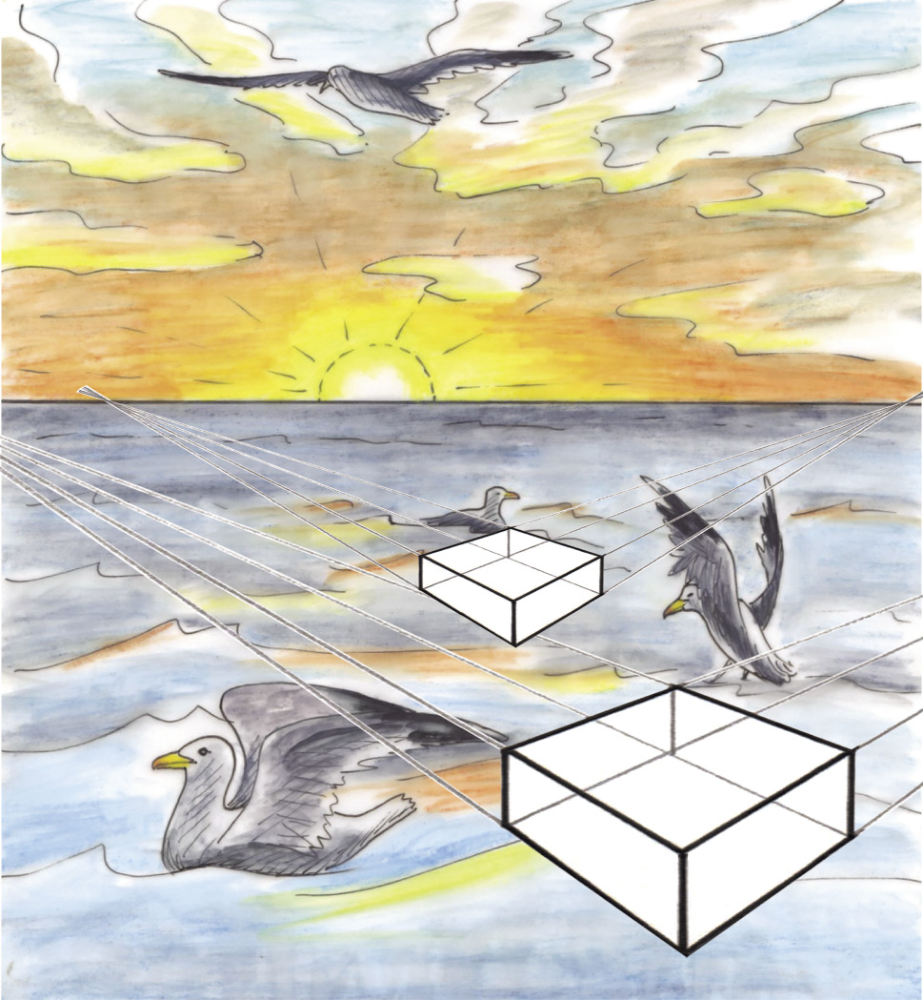
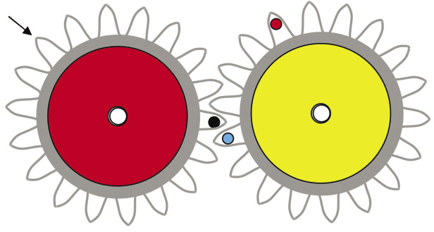

In hierdie hoofstuk jy meer leer oor raamstrukture.
1.1 Hoe kan ons 'n dak sterk maak? 4
1.2 Nog soorte kragte 7
1.3 Elektrisiteitsmaste 12

Figuur 1: Interne aansig van 'n dakstruktuur

Figuur 2: Verskillende soorte kragmaste

Figuur 3: Verskillende soorte dakstrukture
1.1 Hoe kan ons 'n dak sterk maak?
Mense maak en bou baie verskillende soorte goed, soos huise, motors, paaie en damme. Ons maak ook items soos bottels, klere, boeke en meubels. Party goed, soos vurke en lepels en messe, is soliede voorwerpe wat uit slegs een deel bestaan. Ander voorwerpe, soos bottels, potte en watertenks, is hol voorwerpe, wat ook doppe genoem kan word. Ons maak ook voorwerpe wat uit verskillende onderdele bestaan wat aanmekaargesit moet word, soos stoele, tafels en brûe. Hierdie voorwerpe word raamstrukture genoem en dit is belangrik om te probeer om raamstrukture sterk te maak.
Leer oor dakke
Vou 'n kartonvel in die middel sodat dit lyk soos die dak van die huis op die prentjie.
Figuur 4
1. Druk met jou hand afwaarts op joukartondak. Wat gebeur?
2. Miskien is jou dakplate baie sterk en sal hulle nie buig nie. Wat sal gebeur as 'n paar groot mans op die dak gaan sit om die dakplate vas te maak?
Een manier om 'n dak sterker te maak is om meer en dikker materiale te gebruik. Dit is nie 'n goeie plan nie, want dit sal baie geld kos. Dit kan ook die dak so swaar maak dat die mure van die gebou nie sterk genoeg sal wees om dit te dra nie.

Figuur 5
'n Paar ander maniere om 'n dakmodel van karton te versterk word in die sketse hieronder gewys.
3. Kyk mooi na elkeen van die sketse. Skryf 'n sin vir elke skets neer om die metode wat gebruik word om die dak te versterk of te verspan te beskryf.
Die woord "verspan" kom van die Franse woord "bras" wat "arm" beteken. Wanneer jy 'n struktuur verspan plaas jy iets soos 'n ekstra arm in om dit sterker te maak.
A
B
C
Figuur 6
(a) Geval A:
(b) Geval B:
(c) Geval C:
Baie regte dakke word ondersteun deur raamstrukture wat dakkappe genoem word. Stutte kan van hout of staal gemaak word. Die verskillende dele van dakkappe word lede genoem. Elke kap het 'n vertikale deel in die middel. Dit word die hoofstyl genoem.
By sommige ontwerpe van dakkappe is daar meer vertikale dele. Jy kan nog dakkap ontwerpe op die eerste paar bladsye van hierdie hoofstuk sien.
vertikale dakkap

Figuur 7: Onvoltooide dakkappe
Dakkappe moet die gewig van dakmateriaal, soos dakplate, ondersteun.
Figuur 8
4. Watter deel van die dakkappe voorkom dat hulle sywaarts van mekaar weggly as die dakplate op hulle gelaai word? Jy kan antwoord deur dit op figuur 8 hier regs aan te dui.
Die horisontale deel aan die onderend van die dakkap verhoed dat die twee sye van mekaar weggly. In plaas van 'n balk kan 'n tou of draad gebruik word om die twee skuins dele onder aanmekaar vas te bind sodat hulle nie van mekaar kan weggly nie. As 'n balk of 'n stuk staal vir hierdie doel gebruik word, noem hulle dit 'n spanbalk.
'n Spanbalk moet sterk genoeg wees sodat dit nie uitmekaargetrek word deur die kragte wat daarop inwerk nie. Die gewig van die dakplate wat afwaarts op die dakkappe druk, veroorsaak dat die onderste punte van die kap se sye die spanbalk probeer uitmekaar trek, soos wat in die tekeninge hier regs gewys word.
Figuur 9: Die geel spanbalk verkeer onder spanning.

Jy kan sê dat daar spanning in die spanbalk is, net soos wat daar spanning in 'n tou is wat iemand probeer om uit te rek.
Kragte wat spanning veroorsaak, word drukkragte genoem.
1.2 Nog soorte kragte
Maak 'n dak selfs sterker
Die twee skuins dele aan die kante word daksparre genoem.
1. Skryf die naam van elkeen van die vier dele langs die betrokke deel op die diagram hier regs neer. Wanneer jy dit doen, sê ons dat jy byskrifte by die diagram sit.
Figuur 10
Die daksparre kan buig as die wind teen die dak waai of as 'n swaar las op die dak geplaas word.
Figuur 11
2. Wat kan jy doen om die dakkappe te versterk sodat die daksparre nie sal buig as 'n swaar las op hulle inwerk nie? Maak hier 'n skets om jou plan te wys.
Die dakkappe regs het stutsparre om die daksparre te ondersteun.
Figuur 12
Die twee foto's hieronder demonstreer die soort krag wat op stutsparre uitgeoefen word. Wanneer 'n krag so optree, word dit 'n drukkrag genoem.

Figuur 13: Drukkragte wat op daksparre inwerk
- •

Wringkrag en skuifkrag
1. Rol 'n papiervel tot 'n buis en draai dit dan op, soos die persoon in die foto die handdoek opdraai. Deur dit te doen pas jy 'n wringkrag op die papierbuis toe.
Figuur 14
2. Druk jou hande styf teen mekaar soos in hierdie foto gewys word. Vryf jou hande teen mekaar.
Figuur 15
As jy 'n stukkie klei in jou hande sit terwyl jy dit doen, sal die vorm van die klei verander. Die krag wat jy toepas deur jou hande op hierdie manier teen mekaar te laat beweeg, word skuifkrag genoem.
Figuur 16
Figuur 17 wys hoe twee stukke hout met 'n bout saamgevoeg is. As die twee stukke hout van mekaar losgeskeur of teen mekaar gedruk word, sal 'n skuifkrag op die bout inwerk. Dit kan veroorsaak dat die bout buig of selfs bars. 'n Dikker bout sal 'n skuifkrag beter weerstaan.
Figuur 17

Kontroleer wat jy in graad 7 geleer het
1. Sê in elke geval watter kragtipes in die prent gedemonstreer word:
|
|
|
|
|
|
Figuur 18: Verskillende kragtipes
2. Sal hierdie dakstruktuur goed werk?
Figuur 19
Beskryf wat verkeerd kan gaan as dakplate of dakteëls op hierdie struktuur geplaas sou word.
Dakkappe soos dié in die tekeninge hieronder word hangstylkappe genoem.
Die twee vertikale dele word hangstyle genoem. Hulle is beskadu in figuur 20.
Figuur 20
3. Figuur 21 is 'n tekening van 'n ander tipe hangstyldakkap. Beskadu die hangstylkap in die tekening.
Figuur 21
4. Merk al die dele in die tekening hieronder wat onder drukkrag is met "D" en al die dele wat onder spanning is met 'n "T". Doen dit vir al die dele behalwe vir die daksparre.
Figuur 22

1.3 Elektrisiteitsmaste
Verskillende ontwerpe vir kragmaste
1. Kyk na die prente hieronder en op die volgende twee bladsye. Wat is die doel van hierdie strukture? Hoekom word hulle opgerig?
Figuur 23
2. Waarom dink jy is die kragmas in figuur 24 op só manier ontwerp en nie soos in figuur 25 nie?
Figuur 24
Figuur 25
Figuur 26
Figuur 27
Figuur 28
Figuur 29
Die maste in figure 26 en 28 is soliede strukture wat van beton gemaak is. Al die ander maste is staalraamstrukture.
3. Wat dink jy word deur die groen dele van hierdie tekeninge aangedui?
Die maak van 'n struktuur met die gebruik van baie min materiaal
Kragte wat op 'n reghoekige raamwerk inwerk, kan dit laat skeeftrek:
A
D
B
C
D
A
C
B
Figuur 30: Die skeeftrek van 'n reghoekige raamwerk
1. Wat gebeur met die lengtes van lyne AC en BD as die raamwerk skeeftrek? Gaan meet dit en vind uit.
Om te voorkom dat 'n raamwerk skeeftrek, kan 'n versterkingstuk ingevoeg word om dit te trianguleer:
'n Versterkingstuk wat ingevoeg word om 'n raamwerk te trianguleer kan ook 'n verspanbalk genoem word.
geval A
geval B
Figuur 31: Eenvoudige triangulasie van 'n raamwerk
2. Vergelyk wat gebeur as jy kragte soos in geval A en geval B toepas.
(a) Waarom behou die raamwerk sy vorm in geval A, maar verander van vorm in geval B? Wenk: Dink aan die soort kragte wat op die blou balk inwerk.
(b) Hoe kan jy die ontwerp van die raamwerk verbeter sodat kragte dit nie kan skeeftrek nie?
Nog 'n manier om te voorkom dat 'n raamwerk skeeftrek, is om dit twee keer te trianguleer en sodoende 'n kruis te maak. Een verspanbalk gaan van die boonste linkerkantse hoek van die vierhoek na die onderste regterkantste hoek van die vierhoek. Die ander verspanbalk gaan van die boonste regterkantse hoek van die vierhoek na die onderste linkerkantse hoek van die vierhoek.
geval A
geval B
Figuur 32: Kruisverspanning van 'n raamwerk
Dit word kruisverspanning genoem. Dit is 'n spesiale soort triangulasie. Met kruisverspanning, soos in geval A en geval B, trek die raamwerk nie skeef as kragte toegepas word nie.
3. Vergelyk die raamwerkontwerp in figuur 31 met die een in figuur 32.
(a) Kan jy staalkabels in plaas van balke vir die verspanning in beide hierdie raamwerkontwerpe gebruik? Verduidelik jou antwoord.
(b) Wanneer jy staalbalke vir verspanning in beide raamwerkontwerpe gebruik, moet jy dieselfde balkdiktes in beide ontwerpe gebruik of kan jy materiaal bespaar en dunner balke in een van die ontwerpe gebruik?
Hoe om 'n toring te help om verdraaiing teen te staan
Die struktuur van 'n toring moet teen vormverandering kan teenstand bied. Hieronder word twee maniere van vormverandering gewys.
Figuur 33: Skeeftrek Figuur 34: Verdraaiing
Die gebruik van triangulasie en kruisverspanning aan die buitekant van 'n raamwerk help die raamwerk om teen skeeftrekking weerstand te bied. Soos wat in figuur 34 gewys word, help dit egter nie om verdraaiing te voorkom nie.
Verdraaiing vind plaas as daar wringkragte op 'n struktuur uitgeoefen word, soos wat gewys word deur die rooi pyle in figuur 34. Om te voorkom dat 'n toringstruktuur verdraaiing ondergaan, kan jy kruisverspanning binne die raamstruktuur gebruik. Die foto's hieronder wys hoe 'n raamstruktuur met kruisverspanning aan die binnekant en aan die buitekant gebou kan word. Die kruisverspanning aan die binnekant is rooi, en die kruisverspanning aan die buitekant is donkerblou.
Figuur 35: Interne kruisverspanning
In hierdie hoofstuk gaan jy leer oor brûe en ander strukture wat ruimtes oorspan. Jy sal ook leer oor verskillende tipes brûe, en verskillende maniere om brûe stabiel en sterk te maak.
2.1 Vensters en tafels 20
2.2 Verskillende tipes brûe 24
2.3 Hoe om strukture sterk genoeg te maak 28
Vir die werk in hierdie hoofstuk het jy 'n skêr en geriffelde karton nodig. Jy benodig ook 'n rol kleefband.

Figuur 1: Hoe kan die bouers stene bo-oor die vensteropening lê?

Figuur 2: Verskillende maniere om die muur bo 'n venster- of deuropening te ondersteun.

Figuur 3: Wat is die doel van hierdie struktuur? Hoe word dit ondersteun?
2.1 Vensters en tafels
 Figuur 4
Figuur 4
In hierdie prent lê 'n man stene bo-oor die vensteropening, maar die venster is nog nie daar ingebou nie. Wat keer die stene om na onder te val?
Die ander man plaas 'n latei oor die vensteropening. 'n Latei is 'n stuk hout, staal of beton wat die muur bo die opening kan ondersteun.
Lateie en voorwerpe soos hierdie in figuur 5 word balke genoem.

Figuur 5
Bou 'n model van 'n tafel
Valencia is haastig en benodig addisionele tafels vir 'n bruilofsonthaal by haar huis. Sy kan nie bekostig om regte tafels te koop nie, maar sy het 'n hele paar breë planke wat sy as tafelblaaie kan gebruik.
 Figuur 6
Figuur 6
1. Hoe kan jy die houtplanke gebruik om tafels te maak sonder dat dit nodig is om die hout te sny? Maak hieronder 'n rowwe skets van jou plan.
Jaamiah het 'n plan. Sy kan nie regtig die plan se besonderhede verduidelik nie, maar hierdie tekening wat sy gemaak het, wys hoe haar plan gaan werk.

Figuur 7
2. Valencia verstaan nie regtig Jaamiah se tekening nie. Maak 'n beter tekening wat duideliker wys hoe Jaamiah se tafels sal lyk. Jy hoef net 'n vinnige vryhandskets te maak om te wys hoe die tafels sal lyk.
Om te verstaan hoe Jaamiah se tafel sal werk en om te toets of dit goed gaan werk, kan jy 'n klein model van die tafel bou. Gebruik geriffelde karton om dit te doen.
Jy sal drie stukke geriffelde karton nodig hê, wat elk omtrent 20 cm lank en10 cm breed is. Besluit hoe jy die stukke vir die twee tafelblaaie en die twee stutte sal sny. Jy kan hulle met die riffels langs in die wydte sny, soos wat in figuur 8 gewys word, of met die riffels langs in die lengte, soos wat in figuur 9 gewys word.

Figuur 8: Riffels oor die breedte

Figuur 9: Riffels oor die lengte
Bou jou model van 'n tafel en toets dit om te kyk of dit goed sal werk.
3. Hoe moet die geriffelde karton gesny word omdie sterkste blad vir die tafel te maak: met dieriffels in die breedte, of met die riffels in dielengte
Figuur 10
4. Wys op Figuur 11 hoe die riffels moet loop om die sterkste stutte vir jou tafel te maak.
Figuur 12
Dink nou aan maniere om die model van die tafel sterker te maak sodat dit swaarder laste kan dra. Die tafel in Figuur 12 is nie sterk genoeg om die las te dra sonder dat dit buig nie. Nog 'n manier om dit te doen is deur meer stutte onder die tafelblad te plaas.

Figuur 12
Veronderstel dat jy nog 'n strook geriffelde karton het waarmee jy die tafel sterker kan maak. Jy kan die karton as 'n tweede tafelblad gebruik, soos in Figuur 13. Jy kan ook die ekstra strook karton in twee stukke sny om nog 'n stut vir die middel van die tafel te maak, soos in Figuur 14.
5. Watter manier, waarop jy die ekstra karton gaan gebruik, gaan die beste werk om die tafel sterker te maak? Die manier gewys in Figuur 13 of die manier gewys in Figuur 14?

Figuur 13
Figuur 14
2.2 Verskillende soorte brûe
A
B
Figuur 15
Ondersoek brûe
Kyk na figuur 15. 'n Brug moet gebou word sodat mense 'n rivier kan oorsteek. Die afstand tussen punt A en punt B hierbo is omtrent 30 meter.
1. Maak 'n tekening op figuur 15 om te wys hoe die brug dalk kan lyk.
2. Kyk na jou tekening. Op watter manier sal die brug ondersteun word sodat dit nie sal meegee wanneer 'n swaar vragmotor daaroor ry nie?
3. Van watter materiale dink jy moet die brug gebou word?
4. Hoe wyd moet die brug wees?
5. Hoeveel motors kan gelyktydig op die brug wees?
'n balk-en-kolombrug

'n boogbrug

'n vakwerkbrug

'n hangbrug

'n vrydraersbrug

'n kabelankerbrug van die waaiertipe

'n kabelankerbrug van die harptipe
Figuur 16: Verskillende soorte brûe
Jy kan maklik met kleefband 'n klein hangbrug tussen twee skoollessenaars bou. As jy dit doen, gebruik jy die kleefband as kabels.
Figuur 18

Figuur 17
Jy kan kartonstroke dwars oor die twee kabels plaas om vir die brug 'n dek te vorm.
6. Dink jy die hangbrug, soos wat gewys word in figuur 17, sal sterk genoeg wees om 'n klein voëltjie wat daaroor loop te ondersteun?
Jy kan ook 'n klein vrydraerbrug tussen twee skoollessenaars bou. Plaas twee stukke geriffelde karton op die lessenaars, soos die blou voorwerpe op die tekening hieronder. Plaas 'n voorwerp soos 'n boek op die een end van elk van die kartonvelle, sodat hulle nie kan afval nie.

Figuur 19
Jy het nou amper 'n brug, maar daar is nog steeds 'n gaping.
7. Hoe kan jy die vrydraerbrug voltooi sonder om die kartonvelle verder uit te skuif en sonder om die lessenaars te beweeg?
In die geval van 'n hangbrug word die kabels aan die twee kante geanker, op dieselfde manier waarop jy jou kleefbandstroke op die blaaie van die twee lessenaars vasgeplak het. By die meeste hangbrûe hang die dek aan die kabels. Ons kan ook sê die dek word vanaf die kabels gesuspendeer.

Figuur 20
In die geval van 'n kabelankerbrug word die dek ook vanaf die kabels gesuspendeer, maar die kabels is aan ondersteunende kolomme geanker, nie aan twee punte aan elke kant van die brug nie. Om 'n eenvoudige model van 'n kabelankerbrug te maak, kan jy 'n paar stukkies tou aan 'n vel geriffelde karton vasplak.
Draai die karton om sodat die stukke tou aan die onderkant is.
Draai dit dan om en hou die punte van al die stukkies tou in een hand.

Stap B
Stap C
Figuur 21
Stap A

2.3 Hoe om strukture sterk genoeg te maak
Ondersoek wat by strukture verkeerd kan gaan
1. Dink jy dit sal 'n goeie idee wees om 'n glasbladas tafelblad te gebruik?

Figuur 22: 'n Tafel met 'n glasblad
'n Glasblad kan baie maklik kraak of breek of versplinter as swaar voorwerpe daarop geplaas word. Daar is ander dinge wat ook met strukture verkeerd kan gaan.
2. Watter materiaal is gebruik om die pote te maak van die stoel waarop jy sit?
3. Waarom sal dit nie werk as jy rubberpype vir stoelpote probeer gebruik nie?
Tom het hierdie plan gemaak vir 'n model van 'n tafel met 'n ronde blad. Tom se plan is om drie bottels op hul nekke staan te maak, en 'n sirkelvormige stuk karton bo-op hulle te plaas.
Figuur 23: 'n Tafel met 'n ronde blad

4. Verduidelik waarom dit nie so goed sal werk nie.
Hier volg voorbeelde van 'n paar maniere waarop strukture soos brûe of geboue, of dele van brûe en geboue, nie kan werk nie.
- •
5. Die prente hieronder wys verskillende maniere waarop brûe kan misluk. Beskryf wat in elkeen van hierdie gevalle verkeerd gegaan het, en hoe dit voorkom kon word.

Figuur 24

Figuur 25
 Figuur 26
Figuur 26
6. 'n Ontwerp vir 'n klein tafeltjie word hier gewys.
Wat kan alles verkeerd gaan en maak dat die tafeltjienie werk nie?
Figuur 27
7. Die prente op die teenoorgestelde bladsy wys 'n hangbrug en 'n boogbrug.
In die geval van 'n hangbrug hang die dek van die brug aan die kabels wat die vrag dra. Verduidelik in watter opsig 'n boogbrug van 'n hangbrug verskil.


Figuur 28
 Figuur
29
Figuur
29
Huiswerk: Wat het jy geleer?
1. Waar word lateie in huise gebruik en vir watter doel?
2. Kan boë in plaas van lateie gebruik word wanneer huise ontwerp en gebou word? Maak 'n vryhandskets om jou antwoord te illustreer.
3. Wat is die verskil tussen 'n balk-en-kolombrug en 'n boogbrug?
4. Wanneer sal jy 'n hangbrug gebruik in plaas van 'n balk-en-kolombrug.

Volgende week
In die volgende twee hoofstukke gaan julle meer sketse maak en 'n paar nuwe tekentegnieke leer.
In hierdie hoofstuk gaan jy leer van 'n belangrike manier in Tegnologie om jou idees te ontwikkel en te kommunikeer. Jy gaan begin met vryhandsketse. Daarna gaan jy leer hoe om een aansig van 'n voorwerp in twee dimensies te teken. Laastens gaan jy leer hoe om voorwerpe te teken sodat dit drie dimensies wys.
3.1 Lyntipes en skaaltekeninge 36
3.2 Enkelaansig, plat 2D-tekening 40
3.3 Isometriese tekeninge 42

Figuur 1
Figuur 2
Figuur 3
3.1 Lyntipes en skaaltekeninge
Selfs die eenvoudigste bouprojekte moet eers ontwerp word. Om dit te doen moet iemand die beplande struktuur kan teken. Baie min mense kan 'n ding maak sonder om dit eers te teken. Kom ons begin met die basiese beginsels van tekenwerk.
Verskillende lyne vir verskillende doeleindes
Konstruksielyne
Normaalweg word konstruksielyne getrek om met die tekening te begin. Hulle is dun, dowwe lyne wat later deur buitelyne vervang word.
Voorbeeld:
 Figuur 4
Figuur 4
Buitelyne
1. Hierdie lyne staan ook bekend as soliede lyne. Hulle is effens dikker en donkerder as konstruksielyne.
Voorbeeld:

Figuur 5
Versteekte detail
Hierdie lyne word ook versteekte lyne genoem. Dit is lyne wat jy nie kan sien wanneer jy na die voorwerp kyk nie. Hulle is net so dik soos die buitelyne, maar is gebroke.

Figuur 6
Hartlyne
Hierdie lyne wys waar die middelpunt van 'n simmetriese voorwerp is, byvoorbeeld 'n sirkel. Dit word ook streepstippellyne genoem.
As jy 'n gat in 'n voorwerp moet boor, is hartlyne nuttig, want hulle wys jou presies waar jy die boorpunt moet plaas.
|
Figuur 7 |
|


Die simbool
Die simbool  word gebruik om die deursnee van 'n sirkel aan te dui. Die deursnee word geskryf aan die einde van 'n pyl wat na die middelpunt van die sirkel wys.
Teken volgens skaal
Dit is nie altyd moontlik om iets so groot as wat dit in die werklike lewe is te teken nie, want dalk pas die tekening nie op die papier wat jy gebruik nie. Jy moet dus in staat wees om 'n voorwerp volgens 'n ander skaal te kan teken. Maar hoe werk dit?
- • Skaal 1:1 Dit is volskaal, en beteken een sentimeter in jou tekening wys een sentimeter in die werklike lewe.
- • Skaal 1:2 Dit beteken dat 'n sentimeter in jou tekening twee sentimeter in die werklike lewe aandui.
Die tekening hieronder wys dieselfde voorwerp volgens verskillende skale geteken. Meet die onderste lyn van die eerste en die tweede tekening om te kontroleer of die tweede tekening werklik volgens 'n skaal van 1:2 geteken is.
Figuur 9
Kyk na die tekening van'n voorwerp hier regs.

Figuur 10
Skaal 1:10
1. Teken die voorwerp volgens 'n skaal van 1:5 oor. Gebruik 'n liniaal om hierdie tekening, en al die ander tekeninge in hierdie hoofstuk, te maak. Gebruik 'n passer om die sirkel te teken.
- • Wys afmetings.
- • Wys die sirkel se hartlyne.
- • Wys die skaal.

3.2 Enkelaansig, plat 2D-tekening
In die tekeninge wat julle in die vorige les gemaak het, het julle die voorkant, die sykant en die bokant van voorwerpe gewys. Nou gaan jy 'n paar tekeninge maak waar jy net die voorkant van 'n voorwerp wys. Die voorkant van die blok in figuur 11 is rooi.
1. Die dame sien net die rooi gedeelte van die blok. Maak 'n skets van die rooi gedeelte op die geruite blok hieronder.

Figuur 11
|
|

2. Maak 'n 1:10 skaaltekening van die voorkant van hierdie voorwerp.
- • Wys weggesteekte lyne.
- • Wys afmetings.
- • Wys die skaal.

Figuur 12
Skaal 1:15
Indien jy tyd oor het aan die einde van hierdie les kan jy solank oor isometriese projeksie op die volgende bladsy begin lees.

3.3 Isometriese tekeninge
Die verskil tussen 'n 3D skuins- en 'n isometriese tekening word in die voorbeelde hieronder gewys. Beide tekeninge is van dieselfde voorwerp.

Figuur 13: Skuinsaansig

Figuur 14: Isometriese tekening
Die skuinstekening wys die ware lengtes van lyne BC en CD, maar nie die ware lengte van lyn AB nie.
Die isometriese tekening wys die ware lengtes van lyne AB, BC en CD.
Die woord "isometries" is afgelei van die woorde "iso" en "metries". "Iso" beteken "dieselfde" en "metries" verwys na "afmetings".
1. Maak 'n isometriesetekening van diekrytdosie hier regsop die isometriesegeruite blok. Gebruik'n skaal van 1:2
- • Wys versteekte lyne.
- • Wys afmetings.
- • Wys die skaal.
|
|
2. Maak 'n isometriese tekening van dieklavier hier regs op die isometriesegeruite blok. Gebruik 'n skaal van 1:25.
- • Wys weggesteekte lyne.
- • Wys afmetings.
- • Wys die skaal.
Figuur 16
Skaal 1:25
|
|


Volgende week
In die volgende hoofstuk gaan jy leer om tekeninge te maak wat wys wat jy werklik sien. Sulke tekeninge is artistiese tekeninge. 'n Spesiale tegniek, wat jy sal leer, word daarvoor gebruik.
4.1 Perspektieftekening met 'n dubbel verdwynpunt 47
4.2 'n Moeiliker perspektieftekening met 'n dubbel verdwynpunt 50
4.3 Gebruik beskaduwing en tekstuur om tekeninge meer realisties te laat lyk 52

Figuur 1: Ons sien alles rondom ons in perspektief.

Figuur 2: Waar is die verdwynpunt van elke blok?
4.1 Perspektieftekening met 'n dubbel verdwynpunt
Julle het reeds in graad 7 van 'n enkel verdwynpunt perspektief geleer. Nou gaan ons 'n bietjie verder en gaan na perspektief met 'n dubbel verdwynpunt kyk. Kunstenaars gebruik dikwels perspektiefaansigte om dit wat ons met ons oë sien voor te stel.
Wanneer jy na die see, 'n groot dam of 'n wye vlakte kyk, sal jy 'n horisontale lyn sien waar die lug en die aarde mekaar ontmoet. Dit staan as die "horison" bekend.
Om 'n perspektieftekening te maak moet jy dink oor waar die horisonlyn op jou tekening kan wees.
In graad 7 het julle geleer om 'n blok in enkel verdwynpunt perspektief te teken, soos wat in die tekening hieronder gewys word.
Konstruksielyne, wat ook bekendstaan as rigstrepe
Vooraansig
Verdwynpunt
Horisonlyn (HL)
Grondvlak
Figuur 3
Perspektieftekening met 'n dubbel verdwynpunt
In 'n perspektieftekening met 'n dubbel verdwynpunt is daar twee verdwynpunte op die horisonlyn. Op bladsy 46 is daar 'n perspektieftekening met 'n dubbel verdwynpunt van 'n blok.
1. (a) Om 'n dubbel verdwynpunt perspektieftekening van 'n blok te maak kan jy begin deur 'n horisonlyn en een vertikale rand van die blok te teken, soos wat hieronder gewys word.
(b) Trek dan konstruksielyne van die bopunt en onderpunt van die vertikale rand na twee verdwynpunte op die horisonlyn.
Verdwynpunt 1
Verdwynpunt 2
Grondvlak
Figuur 4
2. (a) Sodra jy dit gedoen het, moet jy nog 'n rand van die blok afmerk op die konstruksielyne, soos wat in figuur 5 by A en B gewys word.
(b) Vanaf punt A en B, trek kontruksielyne na verdwynpunt 2.

Verdwynpunt
A
B
(HL)
Verdwynpunt 2
Grondvlak
Figuur 5
3. (a) Merk nou, soos wat in figuur 6 gewys word, by C en D 'n ander rand van die blok af op die konstruksielyne wat na verdwynpunt 2 loop.
(b) Trek konstruksielyne van punt C en D na verdwynpunt 1.

Verdwynpunt 1
B
A
(HL)
D
C
Verdwynpunt 2
Grondvlak
Figuur 6
4. Maak jou eie perspektieftekening met 'n dubbel verdwynpunt van 'n blok hieronder. Trek soliede lyne in, soos wat aangedui word op die bloktekening op bladsy 46.
4.2 'n Moeilikerperspektieftekeningmet 'n dubbel verdwynpunt
Jy gaan nou 'n perspektieftekening met 'n dubbel verdwynpunt maak van 'n blok waaruit 'n stuk gesny is, soos wat in figuur 7 gewys word.

Figuur 7
1. Dit is beter om die blok eers, soos hieronder gewys word, sonder die uitgesnyde stuk te teken.

Figuur 8
2. Merk dan die uitgesnyde stuk soos wat hieronder gewys word.
Verdwynpunt 1
Verdwynpunt 2
Grondvlak
Figuur 9
3. Maak en voltooi jou eie perspektieftekening met 'n dubbel verdwynpunt van die voorwerp in figuur 7. Waar nodig, teken soliede lyne in.
4.3 Gebruik beskaduwing en tekstuur om tekeninge meer realisties te laat lyk
As jy 'n prent van 'n voorwerp teken, kan jy van perspektief gebruik maak om die prent meer lewensgetrou of werklik te laat lyk. As jy jou prent in perspektief geteken het, kan jy dit selfs beter laat lyk deur beskaduwing te gebruik. Beskaduwing is 'n manier om te wys dat iets 'n driedimensionele vorm, in plaas van 'n tweedimensionele vorm is.
Vergelyk byvoorbeeld figuur 10a en 10b.


Figuur 10a: 'n Sirkel (tweedimensioneel) Figuur 10b: 'n Sfeer (driedimensioneel)
Soos wat julle in figuur 11 kan sien, is lig en skaduwee die basiese beginsel van beskaduwing. Die posisie van 'n ligbron relatief tot 'n voorwerp bepaal watter dele van die voorwerp ligter is, en watter dele donkerder.
 Figuur 11: Die
posisie van die lig wat op elke kubus skyn, bepaal watter dele
ligter of donkerder sal wees. Die posisie van die lig op
hierdie kubusse word deur die rooi pyle aangedui.
Figuur 11: Die
posisie van die lig wat op elke kubus skyn, bepaal watter dele
ligter of donkerder sal wees. Die posisie van die lig op
hierdie kubusse word deur die rooi pyle aangedui.
Ongeag die stuk tekengereedskap wat jy gebruik, soos byvoorbeeld 'n pen, potlood, vetkryt, houtskool, 'n kwas of ink, is daar 'n aantal tegnieke wat jy kan gebruik om 'n voorwerp te beskadu.
Arsering
Arsering beteken dat jy min of meer parallelle lyne trek op die deel van die voorwerp wat jy in skadu wil hê. Hoe nader jy die lyne aan mekaar trek, hoe donkerder kan jy die skaduwee laat lyk. Arsering werk goed met enige stuk tekengereedskap wat lyne kan maak.
Figuur 12: Verskillende skaduwees wat deur arsering geskep word
Kruisarsering
Kruisarsering is soos arsering, behalwe dat jy twee stelle lyne trek wat mekaar kruis. Kruisarsering werk ook goed met enige stuk tekengereedskap wat lyne kan maak.

Figuur 13: Verskillende skaduwees wat deur kruisarsering geskep word
Stippels
In plaas daarvan om lyne te trek, kan jy jou pen, potlood of enige ander stuk tekengereedskap gebruik om stippels te maak vir beskaduwing. Hoe nader die stippels aanmekaar is, hoe donkerder sal die skadu wees.
Figuur 14: Verskillende skaduwees deur stippels geskep
Inklae
Jy kan water met ink verdun om verskillende skaduwees te skep. Baie water en min ink sal 'n ligter inklaag veroorsaak, en min water en baie ink 'n donkerder inklaag. Verf die mengsel van ink en water met 'n kwas aan sodra jy dit gemeng het. As jy nie ink het nie, gebruik waterverf op dieselfde manier.
Figuur 15: Verskillende skaduwees wat geskep is deur inklae en 'n kwas
Hieronder is voorbeelde van basiese vorms wat met hierdie verskillende tegnieke beskadu is:
 Figuur 16: 'n Sfeer
Figuur 16: 'n Sfeer
 Figuur 17:
'n Kubus
Figuur 17:
'n Kubus
 Figuur 18: 'n Silinder
Figuur 18: 'n Silinder

Figuur 19: 'n Keël
Hieronder is 'n veel meer komplekse voorwerp. Dit is geteken deur 'n kunstenaar wat 'n kombinasie van beskaduwingstegnieke gebruik het:

Figuur 20: Portret van 'n man in 'n pak klere
Tekenoefeninge
1. Gebruik een van die beskaduwingstegnieke waarvan julle geleer het en skep vyf verskillende skadu's in die blok hieronder.
2. Figuur 21 is 'n tekening wat uit lyne en beskaduwing bestaan. Dit wys 'n boom, huis en motor wat deur die kombinasie van verskillende basiese vorms geteken is.
Beskadu die kopie van hierdie tekening in die spasie hieronder. Gebruik enige van die beskaduwingstegnieke waarvan jy in hierdie hoofstuk geleer het.
Figuur 21

|
|

Volgende week
In die volgende drie hoofstukke gaan julle leer oor verskillende moontlikhede om die manier waarop dinge beweeg te verander. Julle gaan dit doen deur byvoorbeeld ratte en krukasse te gebruik.
In hierdie hoofstuk gaan julle leer hoe wîe, skuinsvlakke, wiele en ratte die rigting en grootte van 'n krag kan verander. Hierdie goed word eenvoudige meganismes genoem. Verskillende eenvoudige meganismes kan in kombinasie met mekaar gebruik word om meer gekompliseerde masjiene, soos fietse en motors, te skep.
5.1 Skuinsvlakke en wîe 59
5.2 Wiele 62
5.3 Ratte 65
rat met 24 tande


rat met 32 tande
matige helling

rat met 32 tande
rat met 22 tande
steil helling
Figuur 1: Jy gebruik verskillende kombinasies van ratte aan 'n fiets as jy teen 'n matige helling opry óf teen 'n steil helling. Waarom?
Woorde om te gebruik as jy oor heuwels en paaie met 'n opwaartse/afwaartse helling praat
As 'n pad oor 'n plat oppervlak loop, sê jy dit is gelyk.
As 'n pad opdraand of afdraand loop, sê jy dat dit 'n helling of 'n gradiënt het.
As 'n pad net effens opwaarts loop sê jy dat dit 'n effense helling het.
As die pad vinniger na bo styg, kan jy sê dat dit 'n taamlike helling het.
As die pad skerp na bo styg, kan jy sê dat dit 'n skerp/steil helling het.

5.1 Skuinsvlakke en wîe
Hersiening: Meganiese voordeel
In graad 7 het jy geleer hoe hefbome, katrolle en krukasse jou kan help om dinge te beweeg. Om 'n voorwerp te laat beweeg, moet jy dit stoot of trek. 'n Stoot- of trekbeweging word krag genoem. Daardie krag sal die voorwerp oor 'n afstand laat beweeg. Krag en afstand is die twee belangrike dinge wat deur meganismes verander word.
Hefbome, katrolle en krukasse is verskillende tipes meganismes. In hierdie hoofstuk gaan jy leer oor meer tipes meganismes.
Party meganismes verander klein insetkrag oor lang afstand in groot uitsetkrag oor kort afstand. Jy kan sê die meganismes het meganiese voordeel, maar afstandsnadeel. Jy kry meganiese voordeel as 'n masjien dit makliker maak om iets op te lig of te beweeg.
Figuur 3: 'n Tang wat 'n meganiese voordeel gee.
Ander meganismes verander groot insetkrag oor 'n klein afstand in klein uitsetkrag oor 'n lang afstand. Jy kan sê die meganismes het meganiese nadeel, maar afstandsvoordeel. Jy kry afstandsvoordeel as 'n masjien iets verder laat beweeg.

Figuur 4: 'n Kombuistang wat 'n afstandsvoordeel gee.
Telkens as jy kyk om te sien hoe meganismes werk, probeer om te verstaan wat met die insetkrag en die uitsetkrag gebeur. Probeer ook verstaan wat met die insetafstand en uitsetafstand gebeur. Bewegingsvoordeel is dikwels ook spoedvoordeel, want as iets in dieselfde tyd verder beweeg, beweeg dit ook vinniger.
Skuinsvlakke
'n Pad wat steil opwaarts loop, kan 'n skuinsvlak genoem word. Die dak van 'n huis wat teen 'n helling na bo loop, is ook 'n skuinsvlak.
Om 'n seun in 'n rolstoel te help om met 'n trap op te gaan
As mense geboue met trappe ontwerp, moet hulle ook ou mense en mense in rolstoele in gedagte hou. Hierdie mense sal, soos die seun in die rolstoel in figuur 5, sukkel om by die trappe op te kom.
Figuur 5
Om die seun te help kan jy 'n oprit bou om 'n gladde pad te vorm tussen die lae plek op die grondvlak en die hoër plek. Onder word twee ontwerpe vir 'n oprit gewys.
'n Oprit/afrit is ook 'n skuinsvlak.
Figuur 6
oprit A
oprit B
Figuur 7
1. Watter ontwerp sal dit die maklikste maak vir die seun om van die grondvlak na die hoër plek te beweeg, en hoekom? Wenk: lees die stuk onderaan bladsy 57 oor: "Woorde om te gebruik as jy oor heuwels en paaie met 'n opwaartse/afwaartse helling praat".
2. Sal die seun op beide opritte A en B oor dieselfde afstand beweeg, of sal hy op een van die opritte oor 'n langer afstand beweeg? Indien wel, watter een?
3. Sal die krag waarmee die seun die wiele moet draai op albei opritte dieselfde wees, of sal dit op een van die opritte groter wees? Indien wel, watter een?
4. Gebruik die volgende woorde om 'n paar sinne te skryf om te verduidelik waarom dit vir die seun makliker sal wees om met die een oprit boontoe te gaan as met die ander een: insetkrag, uitsetkrag, insetafstand, en uitsetafstand.
5. Watter oprit gee vir die seun die grootste meganiese voordeel?
 Wîe
Wîe
Byle en messe is wîe. Wîe verander 'n klein insetkrag in 'n groter uitsetkrag. Hulle gebruik 'n groot insetafstand om 'n klein uitsetafstand te gee.
Waarom maak 'n byl dit makliker om hout te kloof?
uitsetkrag
insetkrag
insetafstand
uitsetafstand
Figuur 8: Die wigvorm van die kop van 'n byl maak dit makliker om hout te kloof.
As jy met 'n wigvormige byl hout kap, veroorsaak 'n groot afwaartse insetafstand 'n klein sywaartse uitsetafstand.
1. Is die insetkrag groter of kleiner as die uitsetkrag? Of is dit dieselfde?
2. Gee 'n byl 'n meganiese voordeel of 'n afstandsvoordeel?

Die tekening hier regs wys hoe wîe gebruik kan word om 'n huis waterpas te kry. As 'n huis nie waterpas is nie, en jy plaas 'n bal op die vloer, sal die bal na die laagste kant of hoek van die huis rol.

Figuur 9: Wîe kan gebruik word omswaar voorwerpe, selfs huise, op te lig!
5.2 Wiele
Wat is spesiaal aan wiele? Net soos 'n bal kan hulle oor 'n oppervlak rol om 'n afstand af te lê. As 'n wiel op die grond draai, beweeg dit in 'n spesifieke rigting vorentoe. 'n Wiel verander dus 'n draai- of rotasiebeweging in 'n reguit beweging of liniêre beweging.
Beide die woorde "rol" en "roteer" is van dieselfde ou Latynse woord "rota" afgelei. "Rotasiebeweging" beteken 'n rol- of sirkelbeweging.
Die woord "liniêr" hou verband met die woord "lyn". "Liniêre beweging" beteken beweging in 'n reguit lyn.
Sonder wiele sal die enigste manier waarop voorwerpe oor die grond of 'n ander oppervlak beweeg kan word, wees om hulle oor die oppervlak te trek. Miskien het jy al 'n swaar kas of selfs 'n yskas of stoof oor 'n vloer beweeg. Dit is harde werk! Maar as daar wiele onder die swaar voorwerp was, sou dit veel makliker gewees het om dit te beweeg, want daar sou minder wrywing wees.
Wrywing is die weerstandskrag wat dit moeilik maak om iets oor 'n oppervlak te laat gly.
Figuur 10 Figuur 11
Stel jou voor jy is besig om 'n swaar kas te beweeg. Gelukkig staan die kas soos 'n inkopietrollie op wiele. As jy die kas stoot, draai die wiele en beweeg die kas vorentoe. Jou liniêre stootbeweging word dus verander in 'n rotasiebeweging van die wiele, wat verander word in die liniêre beweging van die kas. Dit is waarom ons sê dat 'n wiel 'n meganisme is wat die rigting van beweging verander. Dit verander die beweging van liniêre beweging na rotasiebeweging en terug na liniêre beweging.
Die wiele onder die kas was vrydraaiend, soos die voorwiel van 'n fiets. Jy noem dit 'n vrydraaiende wiel.
Die agterwiel van 'n fiets is nie vrydraaiend nie. Dit draai omdat die ketting die rat aan die agterwiel trek om dit te laat draai. So 'n wiel word 'n gedrewe wiel genoem.
Figuur 12: Die agterwiel van 'n fiets word deur die rat-en-kettingmeganisme aangedryf.
'n Gedrewe wiel gee 'n afstandsvoordeel.Die tekeninge regs en onder gebruik'n fiets as voorbeeld om dit te verduidelik.
- • Die ketting gaan om 'n rat aan die agterwiel. Daardie rat het 'n omtrek van 30 cm. As dieketting dus 'n vorentoe trekbeweging van30 cm maak, sal die rat een maal roteer.
- • As die rat een maal roteer, maak die wielook een rotasie.
- • Die wiel het 'n omtrek van 207 cm. As diewiel een rotasie voltooi, beweeg die fiets207 cm vorentoe.
- • Dus, as jy die ketting 30 cm vorentoe trek,beweeg die fiets 207 cm vorentoe. Dit iswaarom 'n gedrewe wiel 'n afstandsvoordeelgee.

Figuur 13: 'n Wiel gee 'n afstandsvoordeel
Vir 'n wiel om te draai, moet dit om iets in sy middelpunt draai. Daardie "iets" word 'n as genoem. 'n As is vir 'n wiel wat 'n spilpunt of steunpunt vir 'n hefboom is.
Die binnekant van die wiel skuur teen die as, daar is dus 'n mate van wrywing wat probeer om die wiel te laat ophou draai. Hierdie wrywing is baie min, want:
- • Die afstand waaroor daar aan die buitekant van die wiel beweeg word, is baie groter as die afstand waaroor daar by die as beweeg word. Jy kan dit op figuur 14 sien, waar die afstand waaroor aan die buitekant van die wiel beweeg word in blou, en die afstand waaroor daar by die as beweeg word in rooi gewys word. Vir dieselfde beweging vorentoe sal 'n groter wiel 'n kleiner afstand by die as gee. Daarom gee groter wiele minder skuur of wrywing by die as.
-
• Die
meeste wiele het 'n baie gladde, geoliede oppervlak of
laers tussen die as en die wiel om die wrywings selfs nog
verder te verminder.

Figuur 14
Groepbespreking
Groepbespreking in groepe van drie of vier, skryf julle antwoorde neer.
1. Hoekom is party wiele klein en ander wiele groot?
Wenk: dink aan die voordele en nadele van klein wiele en van groot wiele.Dink ook aan die gewig en koste van die wiele.
2. 'n Motor, 'n 4 \times 4-bakkie, 'n inkopietrollie en 'n skaatsplank het elkeen vier wiele. Sê vir elkeen van hierdie voorbeelde watter wiele vrylopend is en watter gedrewe.
 5.3 Ratte
5.3 Ratte
Goed kan in twee rigtings draai
Die diagram hieronder wys twee hefbome wat op vertikale stutte gemonteer is. Die hefbome kan om asse draai wat op die diagramme met groot ronde, swart kolle aangedui word.
 Figuur 15
Figuur 15
1. As jy die swart punt van die linkerkantse hefboom na onder druk,
(a) in watter rigting sal die rooi punt van die hefboom beweeg, en
(b) in watter rigting sal die blou punt van dieregterkantse hefboom beweeg?
2. As jy die
swart punt van die linkerkantse hefboom na onder druk,sal die
hefboom kloksgewys
draaisoos hier gewys, 
of antikloksgewys soos hier gewys?
Figuur 16: Om te praat oor die rigting waarin iets oor 'n afstand beweeg, gebruik jy die woorde vorentoe, agtertoe, links, regs, boontoe en ondertoe. Maar wat as iets nêrens anders heen beweeg nie, maar draai terwyl dit in dieselfde posisie bly? Dan praat jy oor iets wat soos die wysers of pyle van 'n horlosie beweeg.
3. As jy die hefboom aan die linkerkant antikloksgewys draai, in watter rigting sal die hefboom aan die regterkant draai?
Ratte is baie soortgelyk aan hefbome. Kyk na die tekeninge hieronder.
A
B
C
Figuur 17: Ratte is baie soortgelyk aan hefbome.
Stel jou voor dat jy, soos in tekening A gewys word, baie hefbome aan 'n ronde skyf vasheg. As jy dan materiaal byvoeg om die punte van die hefbome in die vorm van rattande te verander, sal jy 'n rat hê, soos in tekening B gewys.
Die tipe rat wat in tekening C gewys word, staan as 'n reguittandrat bekend. In die derde kwartaal vanjaar, en in graad 9, gaan julle oor ander tipes ratte leer.
4. Die rooi rat onder word antikloksgewys gedraai totdat die tand met die swart kol die pyltjie bereik.
(a) Trek nog 'n pyltjie om te wys waar die tand met die blou kol sal wees wanneer die swart kol die pyltjie bereik.
(b) Trek 'n klein kruisie om te wys waar die rooi kol sal wees wanneer die swart kol die pyltjie bereik.
Figuur 18
(c) In watter rigting sal die geel rat draai as die rooi rat antikloksgewys gedraai word?
5. (a) In watter rigting moet die klein rat aan die regterkant gedraai word sodat die blou kol afwaarts beweeg as jy begin om die rat te draai?
(b) As die klein rat kloksgewys gedraai word totdat die rooi kol weer terug is by die geel pyltjie,waar sal die blou kol op die groot rat wees? Teken 'n pyltjie op die skets om te wys waar dit sal wees.
Figuur 19
(c) As jy die klein rat met die hand draai, sal die groot rat vinniger of stadiger draai as die klein rat? Verduidelik jou antwoord.
- •
- •
6. As jy wil hê dat die dryfrat en die gedrewe rat in dieselfde rigting moet draai, sal die twee ratte nie werk nie. Kan jy 'n ander plan maak?

Tussenratte
Die tekening hieronder wys 'n stel van drie ratte. Die rat in die middel word 'n tussenrat genoem. Die doel van hierdie rat is om die gedrewe rat in dieselfde rigting as die dryfrat te laat draai.
 Figuur 20: In 'n
stel van drie ratte draai die insetrat en die uitsetrat in
dieselfde rigting.
Figuur 20: In 'n
stel van drie ratte draai die insetrat en die uitsetrat in
dieselfde rigting.
1. Kyk na die stel ratte in figuur 21. As die rat aan die linkerkant die dryfrat is, sal die gedrewe rat vinniger of stadiger as die dryfrat draai, of sal dit teen dieselfde spoed draai?
dryfrat
gedrewe rat
Figuur 21
As die tussenrat kleiner is as die ander ratte, soos byvoorbeeld in figuur 21, word dit van harder materiaal as die ander ratte gemaak. Dit is omdat die tussenrat meer rotasies as die ander ratte sal voltooi. Elke keer as 'n rat roteer, skuur 'n klein bietjie metaal teen die ander ratte af, en word 'n klein bietjie van die metaal weggeskuur. Kyk na jou skoene se sole. Dieselfde gebeur met hulle.

Ratverhoudings
1. Kyk na die ratte hier regs. Die groot rat is die insetrat, en die klein rat is die uitsetrat.
Elke rat is aan 'n as vasgeheg en die as dryf 'n waaier aan. Die spoed waarteen die waaier draai, word die rotasiespoed van die as genoem.
Figuur 22
(a) Sal die waaier aan die groot wiel vinniger of stadiger draai as die waaier aan die klein wiel of sal die twee waaiers ewe vinnig draai?
(b) Sal die krag waarmee jy die as van die groot insetrat draai groter of kleiner wees as die draaikrag op die as van die kleiner uitsetrat?
Ratstelsel kan 'n vinnige rotasiespoed in 'n stadiger een verander, of 'n stadige rotasiespoed in 'n vinniger een. Die ratverhouding is gelyk aan die rotasiespoed van die insetrat gedeel deur die rotasiespoed van die uitsetrat. Die rotasiespoed van elke rat is "omgekeerd eweredig" aan die getal tande aan die rat.
Daarom kan die ratverhouding bereken word deur die aantal tande aan die uitsetrat deur die aantal tande aan die insetrat te deel.
Ratverhouding en spoedverhouding is dieselfde ding. Dit kan ook "snelheidverhouding" genoem word.
In figuur 22 het die groot insetrat 40 tande en die uitsetrat 40 tande. Daarom het hierdie ratstelsel 'n ratverhouding van 20 \div 40 = ½. Jy kan dit ook as 'n verhouding 1:2 skryf. Dit beteken dat die insetrat teen die helfte van die spoed van die uitsetrat draai.
Die ratstelsel verander ook die draaikrag opdie insetas in 'n ander wringkrag op die uitsetas.As die rotasiespoed van die insetas vinniger is, sal die wringkrag op die uitsetas kleiner wees. Vir die ratstelsel in figuur 22, oefen die uitsetas die helfte van die krag van die insetas uit.
Draaikrag word ook wringkrag genoem
ratverhouding =
rotasiespoed van insetas
rotasiespoed van uitsetas
=
draaikrag op uitsetas
draaikrag op insetas
=
aantal tande aan uitsetrat
aantal tande aan insetrat
Soms raak ratte nie aanmekaar nie, maar word hulle eerder, soos in die geval van 'n fiets, met 'n ketting verbind. Die ratverhoudings werk egter nog op dieselfde manier.
Aan die linkerkant in figuur 23 is die verskillende rat keuses vir die voorste deel van die fiets, tussen die pedale. Aan die regterkant van figuur 23 is die rat keuses vir die agterste deel van die fiets, op die agterste wiel. Die aantal rattande is binne elke rat geskryf.
voor
agter
Figuur 23: Ratkeuses by 'n fiets
2. (a) Wat is die grootste ratverhouding wat jy by hierdie fiets kan kies? Kies die voorste en die agterste ratte wat jy sal gebruik, en bereken dan die ratverhouding.
(b) Watter kombinasie van die voorste rat en die agterste rat sal jy kies om teen 'n baie steil heuwel uit te trap?

In die vorige hoofstuk het julle geleer hoe meganismes soos wîe, skuinsvlakke, wiele en ratte die rigting, die afstand en die krag van 'n beweging kan verander. In die geval van wîe en skuinsvlakke was die beweging in reguit lyne. In die geval van wiele en ratte was die beweging in sirkels, met ander woorde "rotasiebewegings".
In hierdie hoofstuk leer julle oor 'n ander tipe beweging wat op 'n reguit lyn plaasvind, maar nie aanhou om op daardie lyn voort te beweeg nie. In plaas daarvan is die beweging heen en weer en op en af met die lyn langs. Jy maak so 'n beweging as jy brood met 'n mes, of hout met 'n saag sny. Hierdie tipe beweging word 'n "wederkerende beweging" genoem.
Julle gaan oor meganismes leer wat rotasiebeweging in wederkerende beweging verander, of, wederkerende beweging in rotasiebeweging.
6.1 Die kruk-en-glyermeganisme 74
6.2 Die nok-en-volgermeganisme 77
6.3 'n Motorenjin: met gebruik van 'n krukas en 'n nokas 81

Figuur 1: Wanneer jy hout saag, maak jy 'n wederkerende beweging.
Figuur 2: 'n Windpomp verander 'n rotasiebeweging in 'n weder-kerende beweging.

 Figuur 3: 'n Stoomlokomotief gebruik
'n kruk-en-glyermeganisme om die wiele te laat
draai.
Figuur 3: 'n Stoomlokomotief gebruik
'n kruk-en-glyermeganisme om die wiele te laat
draai.
6.1 Die kruk-en-glyermeganisme
Hersiening: 'n Kruk-en-drommeganisme
Julle het in kwartaal 3 van graad 7 oor krukasse geleer. Daar is 'n kruk gebruik om 'n wiel, wat 'n drom genoem word en waarom daar 'n stuk tou gedraai is, te draai. Die kruk was deel van 'n groter meganisme wat 'n kruk-en-drommeganisme, of 'n wenas, genoem word. Die kruk word na die een kant gedraai om die tou op te rol en na die ander kant om dit te laat afrol.
- •
In party wenasse word selfs ratte gebruik om 'n nog groter meganiese voordeel te verkry.
Figuur 4: 'n Eenvoudige handaangedrewe wenas wat gebruik word om 'n emmer water op te trek
Om rotasiebeweging in wederkerende beweging te verander
Om rotasiebeweging in wederkerende beweging te verander word 'n kruk op 'n ander wyse gebruik, soos wat in die prente op die volgende bladsy gewys word. 'n Glyer word met behulp van 'n verbindingstang aan die kruk vasgeheg. Die glyer is gewoonlik rond en pas in 'n ronde gat. Dit kan slegs sywaarts beweeg en nie op of af nie.
Daar is 'n spil tussen die kruk en die verbindingstang en nog 'n spil tussen die verbindingstang en die glyer. Albei die spille verander van posisie as die meganisme besig is om te werk. Die kruk draai om die as. Die as verander nooit van posisie nie, dit draai net.
Die kruk kan aan 'n wiel vasgeheg word, om die wiel daarmee saam te laat draai, of die kruk kan deel van die wiel wees.
- •
Hoe langer die krukslag, hoe groter sal die kruk se meganiese voordeel wees. Die vorm van die kruk maak nie saak nie.
krukslag
as

verbindingstang
spille
glyer
Figuur 5: Die verskillende onderdele van 'nkruk-en-glyermeganisme
Met die prente in gedagte
Die verskillende stappe in die werking van 'nkruk-en-glyermeganisme word in diediagram in figuur 6 gewys.
1. Hoe lank is die krukslag in die meganismein figuur 6?
2. Hoe ver is die beweging van die glyer van die verste posisie aan die linkerkant tot by die verste posisie aan die regterkant? Dit kan ook die "volledige sywaartse beweging" genoem word.
3. As die krukslag twee maal so lank was, hoe lank sou die totale sywaartse beweging van die glyer wees?
4. Sal die glyer ooit stil staan as die krukbesig is om te roteer?

Die kruk-en-glyermeganismein 'n stoomenjin
In 'n stoomlokomotief word 'n steenkoolvuur gebruik om water te kook. Die water verander in baie warm stoom met 'n hoë druk. Verbeel jou jy blaas 'n ballon op. Jy moet 'n hoë lugdruk in jou mond opwerk om die ballon groter op te blaas. Die ballon word groter, want die hoër druk van die lug laat die sye van die ballon uitwaarts beweeg. Stoom teen 'n hoë druk kan ook dinge beweeg.
Figuur 7
Die prente hier regs wys hoe die beweging wat deur die stoom onder hoë druk veroorsaak word, in die rotasie van 'n wiel verander word. Die warm stoom onder hoë druk word in rooi aangedui. As die stoom uitsit, koel dit ook af. Die kouer stoom word in pers gewys, en aan die einde word dit in blou gewys.
In 'n enjin word die glyer 'n suier genoem, en die gat waarbinne die suier beweeg word die silinder genoem.

warm stoom onder hoë druk in
stoom sit uit en koel af
koel, laedrukstoom uit
Figuur 8: Die werking van 'n stoomenjin
koel, laedrukstoom uit
'n Stoomenjin gebruik kleppe om die warm stoom links of regs van die silinder in te laat. Die kleppe moet op die regte tye oopmaak en toemaak. Is daar 'n meganisme wat dit kan regkry? Daarvan gaan julle in die volgende les leer.
Kyk weer na figure 6 en 8.
- •
6.2 Die nok-en-volgermeganisme
'n Nok is 'n wiel wat nie rond is nie, of dit is 'n ronde wiel wat om 'n as draai wat nie die middelpunt van die wiel is nie.
'n Nok word met 'n volger gebruik. Die rotasiebeweging van die nok word verander na die wederkerende beweging van die volger. Die volger is in 'n huls, sodat dit slegs in een rigting kan beweeg.
'n Nok word deur 'n as aangedryf, sodat die nok roteer wanneer die as roteer. As die nok roteer, gly die volger op die nok. Die posisie van die volger hang af van die hoek waarteen die nok roteer word.
Onthou julle die verskil tussen 'n gedrewe wiel en 'n vry-draaiende wiel waaroor ons julle in die vorige hoofstuk geleer het?
'n Nok-en-volger verander die rotasiebeweging van die nok in die wederkerende beweging van die volger.

gedrewe as
volger
huls
peervormige nok

slaknok
eksentrieknok
Figuur 9: Die verskillende onderdele van 'n kruk-en-glyermeganisme en verskillende nokvorms
'n Ondersoek na hoe 'n nok gebruik kan word om kleppe oop en toe te maak
Figuur 10 wys hoe die rotasie van ‘n nok die posisie van ‘n klep in ‘n enjin verander. Die figuur vervolg op die volgende bladsy. Bestudeer hierdie figuur baie noukeurig voordat jy die volgende vrae beantwoord.
Figuur 10: Die beweging van 'n klep soos die nok roteer

|
Rotasie van nok |
Beginposisie |
1 agste van 'n nokrotasie |
2 agstes van 'n nokrotasie |
3 agstes van 'n nokrotasie |
|
Rotasie van nok in grade |
0° |
45° |
90° |
135° |
|
Afstand waarmee klep oop is |
0 |
2 mm |
1. Voltooi die tabel hierbo om te wys hoe ver oop die klep is by die verskillende posisies van die nok in figuur 10. Meet die afstand waarmee die klep oop is.
2. Watter van die prente hierbo wys die klep in sy hoogste posisie?
3. Watter prent wys die klep in sy laagste posisie?
Figuur 10 hierbo wys verskillende posisies van 'n nok en 'n klep terwyl die nok roteer. Dit is die wyse waarop die kleppe in die meeste enjins op die korrekte tye oop- en toegemaak word.

- •
|
4 agstes van 'n nokrotasie |
5 agstes van 'n nokrotasie |
6 agstes van 'n nokrotasie |
7 agstes van 'n nokrotasie |
een volle nokrotasie |
|
180° |
225° |
270° |
315° |
360° |
Die wederkerende beweging deur 'n slaknok geskep
1. Die tekening hier regs gebruik rooi pyle om die afstand tussen die middelpunt van 'n slaknok en die rand daarvan by verskillende rotasiehoeke te wys. Elke pyl is kloksgewys met 45° vanaf die vorige pyl geroteer.
Meet die onderskeie pyle, van die kortste tot die langste en skryf jou afmetings in die tabel hieronder.
7
8
6
9
5
1
4
2
3
Figuur 11: 'n Slaknok
|
posisie |
1 |
2 |
3 |
4 |
5 |
6 |
7 |
8 |
9 |
|
lengte |
2. Is daar 'n patroon in die lengtes van die pyle? Hoe werk die patroon?
3. Wat gebeur tussen posisie 9 en posisie 1?

Iets om tuis te lees: 'n ander soort nok
Party nokke is ronde wiele, maar hulle roteer nie om die middelpunt van die wiel nie. Hierdie nokke word eksentrieknokke genoem. Hulle word aan baie moderne fietse gebruik.
Gedurende 'n fietswedren kry die ryers soms pap wiele en lekkasies. Hulle moet dan die wiel afhaal om die band af te haal sodat hulle dit kan regmaak. Dit neem baie tyd en hulle sukkel om weer die ander fietsryers in te haal.
Baie jare gelede het ingenieurs 'n meganisme ontwerp waarmee 'n mens gou-gou, sonder die gebruik van enige gereedskap, 'n wiel van 'n fiets kan afhaal. Dit word 'n "slipmeganisme" genoem.
Deesdae word slipmeganismes aan die wiele van die duurder fietse gebruik. Hulle gebruik ook 'n slipmeganisme om dit vinniger en makliker te maak om die hoogte van die saal te verstel. Die foto's hieronder en hier regs wys hoe 'n slipmeganisme van 'n eksentrieknok gebruik maak om die saal op die korrekte hoogte vas te sluit.
raam-werk
saalpyp

slipmeganisme
Figuur 12: 'n Slipmeganisme word gebruik om die saalpypaan die raamwerk van hierdie fiets vas te klamp.

Figuur 13: Die sye van hierdie slipmeganisme beweeg of klem nouer saam as die eksentrieknok met die handvatsel gedraai word.
6.3 'n Motorenjin: met gebruik van 'n krukas en 'n nokas
Die onderskeie stappe in die rotasie van 'n vierslag-petrolenjin
Figuur 14 wys hoe 'n eensilinder-petrolenjin werk.
uitlaatklep toe
Inlaatslag: As die suier afwaarts beweeg, word 'n mengsel van lug en petrolgas by die silinder ingesuig.
uitlaatklepoop
uitlaatklep toe
Kompressieslag: Die mengsel van lug en petrol word saamgepers as die suier opwaarts beweeg.
uitlaatklep toe
uitlaatklep toe
Ontbrandingslag: Die vonkprop laat die mengsel van lug en brandstof ontbrand sodat dit ontplof. Dit druk die suier afwaarts.
inlaatklep toe
Uitlaatslag: As die suier opwaarts beweeg, word die uitlaatgasse uitgedruk.
uitlaatkelpoop
inlaatklep toe
Figuur 14
In 'n motorenjin is die nokke dele van die nokasse wat draai as die enjin draai. Julle hoef nie alles oor die enjin in figuur 14 te verstaan nie, solank julle net kan sien dat dit belangrik is dat die inlaatkleppe en uitlaatkleppe op die korrekte tye oop maak en toe maak.

nokband
verbindingstang

kleppe
nokasse

suier
silinder
krukas
Figuur 15: Die bewegende onderdele binne een silinder van 'n motorenjin
Teken 'n enjinkrukas
1. Maak 'n drie-dimensionele artistiese tekening van die krukas van 'n eensilinderenjin. Gebruik beskaduwing om dit meer realisties te maak. Maak eers 'n rowwe tekening voordat jy jou finale netjiese tekening maak.
Wenk: Gaan terug na bladsy 54 om te sien hoe jy beskaduwing kan gebruik om 'n voorwerp rond te laat lyk.
Volgende week
Julle gaan volgende week met 'n praktiese projek begin om 'n model van 'n masjien, wat graan kan vergruis om meel te maak, te ontwerp en te bou. Hierdie masjien sal rotasiebeweging in wederkerige beweging verander.
Oor die volgende ses weke gaan jy 'n masjien ontwerp wat graan, soos mielies en koring, tot meel kan maal, en ook 'n model van die masjien maak.
Week 1
Vergelyk verskillende ontwerpe en maak jou eie ontwerp 88
Week 2
Teken jou ontwerp en bou die model 94
Week 3
Bring verbeterings aan die model aan en teken 'n artistiese perspektieftekening daarvan 104
Week 4
Maak 'n aanbieding oor jou model en tekeninge 108
Assessering
Ondersoek:
Beoordeel die verskillende ontwerpe wat ander mense maak [6]
Ontwerpopdrag, spesifikasies en beperkings [6]
Ontwerp:
Hoe om die struktuur te versterk [8]
Besluit watter tipe meganisme jy gaan gebruik [4]
Maak:
Bou die basiese struktuur met die meganisme daarbinne [12]
Teken jou eie ontwerp van onderdele om by die model te voeg [12]
Bring verbeteringe aan die model aan [10]
Teken 'n artistiese perspektieftekening van jou model [12]
[Puntetotaal: 70]

Figuur 1: Hoe word mielies mieliemeel?
Figuur 2: Voordat masjiene uitgevind is om mieliepitte te vergruis of te maal was harde werk nodig om mieliemeel te maak.
Week 1
Vergelyk verskillende ontwerpe en maak jou eie ontwerp
Beoordeel verskillende ontwerpe wat ander mensegemaak het (30 minute)
Hierdie werk is individuele werk.
Die tekeninge hieronder wys rowwe ontwerpe vir graanvergruisers wat deur ander mense gemaak is. Hierdie ontwerpe is nie volledig nie, en probleme kan by hulle voorkom. Hierdie ontwerpe kan jou dalk bruikbare idees gee.
ontwerp A

ontwerp C
hefboom
ontwerp B
stamper
Figuur 3: Rowwe ontwerpe deur ander mense gemaak
Maak 'n lys van die voor- en nadele van die onderskeie ontwerpe. Dink oor die volgende na:
- • Hoe sterk en stabiel is die struktuur?
- • Watter materiaal en gereedskap het jy nodig om diestruktuur te maak?
- • Hoe maklik sal dit wees om die struktuur te maak?
- • Hoe hard en hoe vinnig sal die stamper die vloer tref?
-
• Wat is
die meganiese voordeel van die hefboom?
Jy gaan beoordeel word volgens die laaste twee rye van die tabel, wat handel oor voordele en nadele.
|
Ontwerp A |
Ontwerp B |
Ontwerp C |
|
|
Sterkte en stabiliteit van die struktuur |
|||
|
Materiaal en gereedskap benodig |
|||
|
Hoe maklik om te maak? |
|||
|
Hoe hard en hoe vinnig sal die stamper met die vloer in aanraking kom? |
|||
|
Meganiese voordeel van die hefboom |
|||
|
Voordele |
|||
|
Nadele |
Totaal [6]
Ontwerpopdrag, spesifikasies en beperkings (30 minute)
Bespreek hierdie dinge in spanne van drie of vier. Daar moet minstens een seun en een meisie in elke groep wees. Elke leerder moet sy of haar eie antwoorde hieronder neerskryf.
1. Skryf die ontwerpopdrag. 'n Ontwerpopdrag sê vir jou wat die probleem is en wie die oplossing gaan gebruik of voordeel daaruit trek. (1)
'n Masjien om graan te vergruis sal meestal deur 'n elektriese motor, wat rotasiebeweging voorsien, aangedryf word. In jou model gaan jy nie 'n elektriese motor gebruik nie, maar liewer die handvatsel van 'n krukas met die hand draai. Hierdie rotasiebeweging moet in 'n wederkerende beweging verander word sodat die graan vergruis sal word soos wanneer dit met 'n hamer geslaan word.
Die meganisme wat in jou model gebruik word, moet binne 'n sterk en stabiele raamwerk ingebou word.
2. Beantwoord die volgende vrae om die spesifikasies vir jou ontwerp te identifiseer:
(a) Watter verskillende meganismes kan die graanvergruiser laat werk? (1)
(b) Watter kragte moet die struktuur in staat wees om te weerstaan? (1)
3. Identifiseer die beperkings:
(a) Hoeveel tyd het ek om die model te ontwerp en te bou? (1)
(b) Watter materiaal kan ek maklik in die hande kry om die model te bou?(1)
(c) Watter gereedskap het ek reeds om die model mee te bou? (1)
Totaal [6]
Ontwerp om die struktuur te versterk (45 minute)
Werk weer in julle spanne, maar maak jou eie sketse en gee jou eie antwoorde.
Julle sal later opdragte ontvang oor hoe om 'n struktuur soos die een hieronder te bou. Hierdie struktuur is egter problematies. Dit is nie stabiel genoeg om kragte van die kant af te weerstaan nie. Dit kan omval of inmekaarval.


Figuur 4: 'n Struktuur vir 'n graanvergruiser wat nie sterk genoeg is om kragte wat van die kant af daarop inwerk te weerstaan nie.
Ontwerp iets wat jy by die struktuur kan voeg om te voorkom dat dit inmekaarval of sywaarts omval. Raadpleeg hoofstuk 1 vir hulp.
1. Maak 'n rowwe skets van jou plan hieronder om die struktuur te versterk. Elke leerder in jou span moet sy of haar eie skets van sy of haar eie idee maak. Voeg aantekeninge en byskrifte by die skets om jou ontwerp te verduidelik.(4)
2. Vergelyk die rowwe ontwerpe van elkeen in julle span. Besluit dan gesamentlik watter ontwerp julle gaan gebruik om die struktuur te versterk. Maak 'n netjiese skets van hierdie ontwerp in die ruimte hieronder. Voeg aantekeninge en byskrifte by die skets om die ontwerp te verduidelik. (4)
Totaal [8]
Besluit watter tipe meganisme jy gaan gebruik (15 minute)
Kyk na die ou manier om graan te vergruis of fyn te maal wat op die tekening hier regs gewys word. Die hol houer hou die graansaad. Die operateur laat val die swaar paal met 'n sterk, vinnige beweging in die houer. Hierdie beweging breek die graankorrels in kleiner stukkies op.
Die meganisme wat jy vir jou graanvergruiser kies, moet ook 'n sterk, vinnige afwaartse beweging van die stamper hê.
Jy kan 'n kruk-en-glyermeganisme gebruik of een van die nokvorms hieronder om die rotasiebeweging in 'n wederkerende beweging te verander. Jy het die name van hierdie nokvorms in hoofstuk 6 geleer.
Jy moet besluit watter een van 'n kruk-en-glyermeganisme of 'n nok-en-volgermeganisme die beste sal werk om die graan te vergruis. As jy 'n nok-en-volgermeganisme kies, moet jy ook die vorm van die nok kies.
Figuur 5
stamper


Figuur 6: Verskillende meganismes waaruit jy kan kies om rotasiebeweging in wederkerende beweging te verander
1. Watter meganisme het jy gekies en hoekom?
Totaal [4]
Week 2
Teken jou ontwerp en bou die model
Bou die basiese struktuur en die meganisme daarbinne(60 minute)
Bou eers die struktuur en meganisme volgens die planne en instruksies op die volgende bladsye. Voeg later jou eie ontwerp om die struktuur te versterk by.
Die foto hieronder wys hoe die model sal lyk voor jy jou veranderinge gemaak het.

A-raam
spyker


volger

ondersteuner vir die as
draadhandvatsel en draadas
wiel
hefboom
stamper
Figuur 7
In die planne van die model word 'n wiel gebruik in plaas van 'n kruk-en-glyermeganisme, daarom sal die model nie werk nie. Jy sal 'n nok-en-volger- of 'n kruk-en-glyermeganisme moet gebruik om dit te laat werk.
Op die volgende bladsye is daar tekeninge van die onderskeie onderdele wat jy uit riffelkarton moet sny. Trek die vorms af op karton voordat jy hulle uitsny. Maak seker dat die riffels in die regte rigting wys, soos deur die pyltjies op die tekeninge aangetoon word.
Riffels is soos tonnels tussen die twee buitenste lae van die karton. Riffelkarton is sterker in die een rigting as in die ander rigting.
Jy sal self moet besluit hoeveel van elke onderdeel jymoet maak. Jy sal ook moet besluit waar jy skeiringe gaan gebruik en hoeveel van hulle om te gebruik.
Elke lid van die span moet sy of haar eie model bou.
Sny hierdie bladsy uit en trek die vorms van die onderdele op riffelkarton af. Sit die bladsy agterna weer terug in jou boek.
 Figuur 8: Die onderdele van een van die
twee A-rame wat as ondersteuning vir die as dien.
Figuur 8: Die onderdele van een van die
twee A-rame wat as ondersteuning vir die as dien.
Sny hierdie bladsy uit om die vorms van die onderdele op riffelkarton af te trek. As jy klaar is, moet jy die bladsy weer in jou boek terugsit.

Figuur 9: Die onderdele van die hefboom en die volger van die nok wat daaraan vasgeheg sal wees.

Figuur 10: Drie verskillende nokvorms om van te kies.
Figuur 11: Skeiringe wat op die asse gebruik moet word
Die stappe om die model te bou word op die volgende twee bladsye gewys.
Hoe om die onderdele van jou model vas te heg
Gebruik Prestik om die stukke karton aanmekaar vas te heg, sodat jy hulle kan losmaak as jy 'n fout maak of iets wil verander. Nadat die projek voltooi is, kan jy gom of kleefband gebruik om die model sterker te maak.
Ander materiaal wat jy nodig sal hê
Gebruik koperdraad met 'n dikte van 1 mm vir die as van die krukas- of nokmeganisme. Koperdraad is maklik om te buig en jy kan dit met 'n skêr sny. As jy nie koperdraad het nie, kan jy dun staaldraad gebruik. Om dit te buig en te sny sal jy egter 'n tang nodig hê.
Gebruik 'n spyker of 'n stuk draad vir die as waarom die hefboom draai.
Veiligheids-waarskuwing
Moenie enige koperdraad uit elektriese bedrading verwyder nie. As jy dit doen, kan jy doodgeskok word en sal ander mense nie die elektrisiteit kan gebruik voordat die drade reggemaak word nie. Jy kan ook tronk toe gaan as jy elektriese draad steel.
Ongewenste sywaartse beweging op die as
Die model wat in die foto gewys word, werk nie goed nie aangesien die hefboom sywaarts op sy as kan beweeg. As dit gebeur, kan die volger van die nok afval.

hefboom

as
volger
Figuur 13
Puntetoekenning
Om jou model te assesseer gaan jou onderwyser na die volgende kyk:
- • Jy het die planne en instruksies suksesvol gevolg en nagekom. (4)
- • Jy het 'n meganisme gemaak om die rotasiebeweging van die handvatselin 'n wederkerende beweging van die stamper te verander.(3)
- • Die onderdele wat op asse draai, kan nie sywaarts beweeg nie. (2)
- • Jou model werk goed. (3)
Totaal [12]
knip draad af


skeiring
Figuur 12: Verskillende stappe om die model te bou
Teken jou ontwerp van die onderdele om by die model tevoeg (60 minute)
Hierdie is individuele werk.
Figuur 4 op bladsy 91 wys dat die model waaraan jy tot dusver gebou het nie stabiel genoeg is om kragte wat van die kant af daarop inwerk te weerstaan nie. Dit kan inmekaarval of omval. Jy wil struktuurdele vervaardig om by die struktuur te voeg om te verhoed dat dit gebeur.
Maak: 'n Werkstekening in 2D
1. Maak 'n werkstekening in 2D van die dele wat jy tot die struktuur sal toevoeg om te keer dat dit nie kan inmekaarval of omtuimel nie.
Besluit self wat die skaal van die tekening moet wees sodat dit in die ruimte hieronder kan inpas.
Om jou tekening te assesseer sal jou onderwyser na die volgende kyk:
- • Die tekening wys akkuraat die ontwerp wat jy op bladsy 92 geskets het. (2)
- • Die tekening wys al die belangrike afmetings. (2)
- • Die tekening is volgens skaal en die skaal word aangedui. (1)
- • Die tekening wys al die verborge lyne. (1)
Maak: Tekeninge in isometriese projeksie
2. Maak 'n 3D isometriese tekening van dit wat jy by die struktuur wil byvoeg. Gebruik 'n liniaal.
Jy moet self oor die skaal besluit sodat die tekening op die ruitpapier hieronder sal inpas.
Dit is nie nodig om verborge lyne op die tekening te wys nie.
Om jou tekening te assesseer sal jou onderwyser na die volgende kyk:
- • Die tekening wys akkuraat die ontwerp wat jy op bladsy 92 geskets het.(2)
- • Die tekening wys die afmetings op die korrekte wyse. (3)
- • Die tekening is volgens skaal en die skaal word aangedui. (1)
|
|
Totaal [12]

Week 3
Bring verbeteringe aan die model aan en teken 'n artistiese perspektieftekening daarvan
Hierdie werk is individuele werk, alhoewel spanmaats mekaar mag help deur idees onderling te deel.
Maak jou verbeteringe aan die model (60 minute)
Sny die dele uit wat jy by die struktuur gaan voeg om dit sterker te maak en plak hulle dan met Prestik aan die struktuur vas.
Toets jou model om te sien of dit nou sterk genoeg is om kragte wat van die kante af daarop inwerk te weerstaan. As dit nie sterk genoeg is nie sal jy meer veranderinge moet aanbring. Totaal [10]
Teken 'n artistiese tekening in perspektief van joumodel (60 minute)
Die meeste perspektieftekeninge met 'n dubbel verdwynpunt het verdwynpunte wat so ver weg is dat jy hulle nie op die papier kan teken nie. As die verdwynpunte naby die tekening van 'n voorwerp is, lyk dit asof jy van baie naby af, soos 'n vlieg die voorwerp sou sien, daarna kyk. Hierdie tekening is 'n voorbeeld daarvan.
 Figuur 14: Nabyblik op
'n reghoekige raamwerk
Figuur 14: Nabyblik op
'n reghoekige raamwerk
Dit lyk baie vreemd. Daarom gebruik kunstenaars meestal eerder verdwynpunte wat baie ver weg is en nie op die papier kan inpas nie.
Instruksies om die tekening te maak
Trek eers 'n reghoekige kassie waarbinne die model sal pas. Teken dit in dubbel verdwynpunt perspektief. Gebruik verdwynpunte wat ver weg is en nie op die papier nie. Trek fyn lyne vir die sigbare asook die verborge lyne.
Maak dan 'n vryhandskets van jou model binne hierdie kassie. Moenie verborge lyne wys nie. Nadat jy al die buitelyne geteken het, maak gebruik van beskaduwing om die skets meer realisties te laat lyk. Wenk: kyk weer na wat jy in hoofstuk 4 oor beskaduwing geleer het.
- •
Die tekening hieronder wys hoe iemand anders 'n motorkar in dubbel verdwynpunt perspektief geteken het, deur eers 'n kassie te teken waarbinne die motorkar sal pas.
Figuur 15: Om van 'n gekompliseerde voorwerp 'n perspektieftekening met 'n dubbel verdwynpunt te maak
Iets om tuis te doen
Plaas hierdie bladsy op 'n groot stuk koerantpapier. Verleng die lyne van die reghoekige raamwerk om te sien waar die verdwynpunte is.
Maak eers 'n rowwe skets op hierdie bladsy, voordat jy jou finale tekening, met beskaduwing, op die volgende bladsy maak.
Puntetoekenning
Om jou model te assesseer sal jou onderwyser op die volgende let:
- • Dit is maklik om te verstaan wat die tekening wys. (3)
- • Jy het eers 'n rowwe skets gemaak voordat jy jou finale tekening gemaak het.(2)
- • Jy het 'n reghoekige kassie geteken waarbinne die model kan inpas en gebruik fyn lyne vir sigbare en verborge lyne. (1)
- • Jy het die kassie in dubbel verdwynpunt perspektief geteken, en verdwynpunte gebruik wat ver weg is, en nie op die papier nie. (2)
- • Jy het al die konstruksielyne met fyn lyne aangetoon. (1)
- • Jy het die buitelyne van jou model met donker lyne aangetoon. (1)
- • Jy het beskaduwing gebruik om die skets realisties te laat lyk. (2)
Totaal [12]
Volgende week
Volgende week gaan julle 'n "tentoonstelling" van julle projekte hou. Elke span sal 'n tafel hê waarop sy modelle uitgestal word, asook die span se ontwerptekeninge en die finale tekeninge. Elkeen van julle sal die geleentheid hê om tussen die tafels van die ander spanne deur te loop om na hulle projekte te kyk en om vrae aan hulle te vra. Op hierdie manier sal julle leer hoe ander spanne op ander maniere as julle span probleme opgelos het. Dit mag jou idees gee oor dinge wat jy dalk in die toekoms wil ontwerp en bou.
Indien enige van jou tekeninge nog nie voltooi is nie, voltooi hulle oor die naweek.
Laat jou model oor die naweek in die sorg van die tegnologie-onderwyser. Moet dit nie huis toe neem nie.
Week 4
Maak 'n aanbieding oor jou model en tekeninge (60 minute)
Elke lid van julle span moet vir 15 minute in beheer van julle tafel wees. Terwyl jy in beheer is, moet jy die ander leerders wat na julle projekte kom kyk se vrae beantwoord.
Wanneer jy nie in beheer van jou span se tafel is nie, moet jy tussen die ander tafels deurloop en na die ander spanne se projekte kyk. Vra vrae oor waarom hulle die modelle ontwerp het op die wyse waarop hulle dit gedoen het. Gebruik die ruimte hieronder en maak 'n tekening van ten minste een nuwe idee wat jy by 'n ander span se tafel gesien het. Dit moet 'n idee wees waaraan jy nooit gedink het voordat jy die ander span se model gesien het nie.

Geniet julle Paasvakansie. Volgende kwartaal leer julle oor die uitwerking van tegnologie op die samelewing en die omgewing. Julle gaan leer hoe tegnologie mense help, maar dat dit dikwels 'n negatiewe uitwerking op die omgewing het. Daar is gelukkig slim maniere om die uitwerking op die omgewing te verminder.